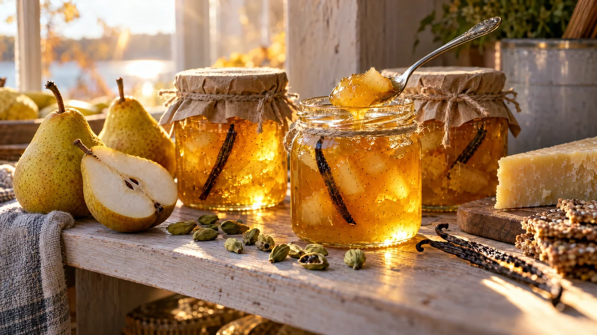

RESTFEST · RECEPTSylt, saft & inlagt
Päron- och vaniljsylt med kardemumma
De mjuka päronen längst ner i fruktskålen, en citron och en vaniljstång kokas till en gyllene, genomskinlig sylt med små mjuka fruktbitar och doft av nystött kardemumma. Den lyser som bärnsten i burken. Perfekt till ost, gröt och nygräddade scones, och en självklar julklapp.
- Förberedelse
- 20 min
- Tillagning
- 20 min
- Portioner
- ca 1 liter (4 burkar à 2½ dl)
- Nivå
- Nybörjare
Bra att veta. Diska burkar, flaskor och lock noga och skålla dem med kokande vatten precis före användning, eller värm glaset i ugnen på 125 grader i 10 minuter. Fyll dem medan innehållet är varmt och skruva på locket direkt. Förvara öppnade burkar i kylen och använd alltid en ren sked.
 Det här behöver du
Det här behöver du
Tryck på + vid det du behöver köpa.
Gör så här
- Ställ en tallrik i frysen till geléprovet. Diska och skålla burkarna.
- Skala och kärna ur päronen och skär dem i små tärningar, ca 1 cm. Vänd tärningarna direkt i citronsaften så att de inte mörknar. Du ska ha ca 800 g frukt.
- Dela vaniljstången på längden och skrapa ur fröna.
- Lägg päron, citronsaft, vatten, vaniljstång och vaniljfrön i en vid kastrull med tjock botten. Låt sjuda under lock i 8–10 minuter, tills päronen är mjuka. Mosa en del av bitarna med en potatisstöt, men låt hälften vara kvar.
- Rör ner syltsocker och kardemumma. Koka upp under omrörning och låt koka kraftigt i 5 minuter, eller enligt syltsockrets förpackning.
- Gör ett geléprov: droppa lite sylt på den kalla tallriken och vänta en minut. Skrynklar sig ytan när du drar ett finger genom den är sylten klar. Koka annars någon minut till och prova igen.
- Ta upp vaniljstången och skumma av ytan. Fyll de varma burkarna nästan ända upp och skruva på locken direkt.
Dekoration och servering
- Klipp vaniljstången i bitar och stick ner en i varje burk, det syns fint genom glaset.
- Lägg en bit linnetyg eller bakplåtspapper över locket och knyt ett snöre runt.
- Servera till lagrad ost och knäckebröd, till fröknäcket i recept 61, eller på gröt och yoghurt.
- Oöppnade burkar håller ca 6 månader i ett svalt skafferi. En öppnad burk håller 3–4 veckor i kylen.
Mått och ugnstemperaturer
Måtten är svenska (dl, msk, tsk, krm). Ugnstemperaturerna gäller vanlig ugn med över- och undervärme; med varmluft, sänk med 20 grader.